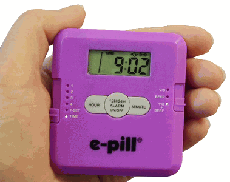
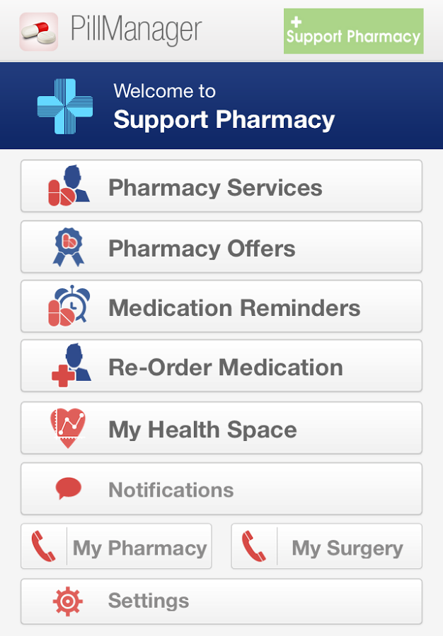
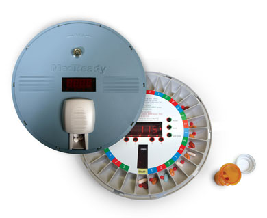
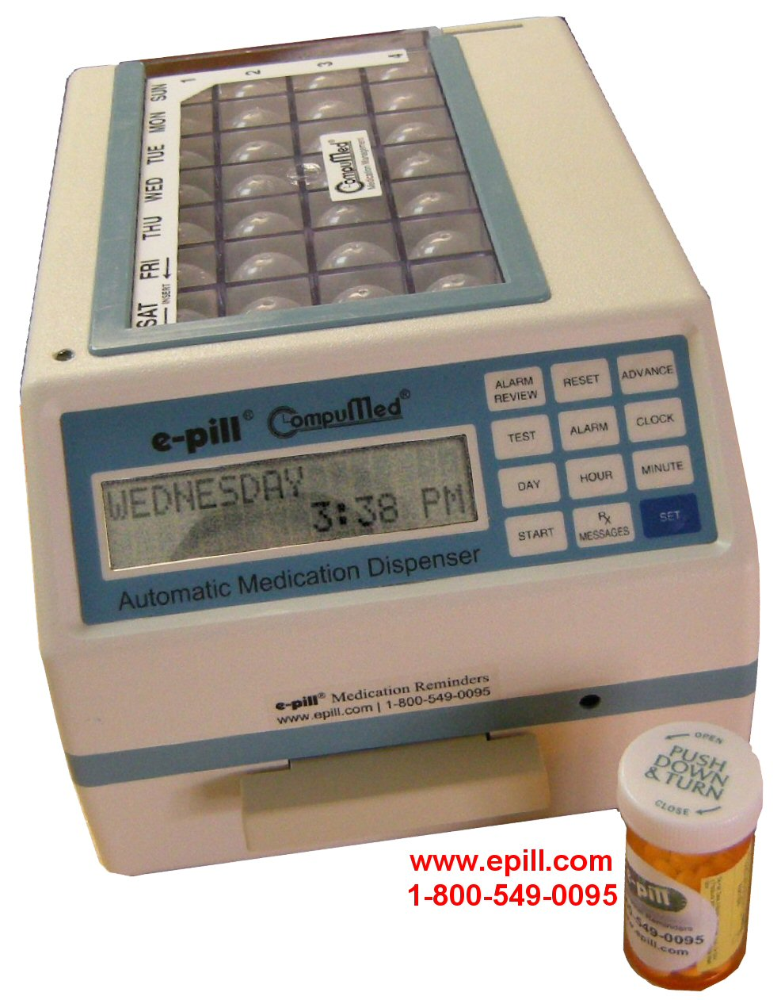

class: center, middle # Open Hardware # Medication Management <br/><br/> Proposer: Craig Agricola ??? "Good afternoon, my name is Craig Agricola and," "I'd like to present my vision for an open hardware medication management platform" "I'm going to go pretty quickly through the "elevator pitch" portion so that I don't run over my time when we get to the project details." --- # Project background ### Why should we care about medication management? - It's not really that hard to remember to take medicine, is it? -- - It's not, but mostly for two reasons: - The vast majority of what we take is short term - A lot of what we take we are driven to take because of symptoms -- - Remembering to take long term medication consistently is surprisingly difficult - The symptoms are often not acute until *after* we forget to take them - After a few weeks, we don't think about it as actively ??? --- # Project background ### Why should we care about medication management? - There are three groups who are especially prone to forgetting: -- - Older adults with the memory issues associated with aging -- - Adults with normal memory, but who are distracted by chaotic routines (parents) -- - Children -- - This was my personal reason to think about the problem ??? - Personal anecdote - I've got 4 kids, and 3 of them have had to take long term medications when they were younger. - Helping them to remember to take their meds was sometimes difficult because they wouldn't remember if they already had - Sometimes I would give them their meds before I left, and when my wife checked in with them, they wouldn't remember whether they had already taken them or not. - She couldn't easily ask me, because I had already left... Technology should be able to help with this! --- # Project background ### Why should we care about medication management? - Technology should be able to help! - For the distracted adults, it makes sense to outsource the work of paying attention to a smart device - For children, and at least a subset of the elderly, a caretaker is often part of the solution - Getting reminders and checking status remotely would be a huge help ??? It often makes sense to have a smart device pay attention to the small things that we don't have the focus to pay attention to. It frees us up to focus on the stuff that we really do need to pay attention to. With kids and at least some of the aging population, a caretaker is involved in helping them remember. But this requires coordination; Getting reminders and checking status, and not having to be in the same place to do it, would be a huge help. --- #Solutions already available - Localized solutions -- - Pill containers with a built in alarm clock <center></center> ??? --- #Solutions already available - Localized solutions - Pill containers with a built in alarm clock - Mobile reminder apps <center></center> ??? Just an alarm clock - It doesn't know if you've actually taken the pill; it just goes off at a set time - It's basically a branded version of the alarm that you already have built in to your phone. --- #Solutions already available - Localized solutions - Pill containers with a built in alarm clock - Mobile reminder apps - Commercially managed pill reminders with monitoring <center> </center> ??? - Commercially managed pill reminders - Left one is about $200 - Right one is tamper resistent, and so more expensive, at about $800 --- #Solutions already available - Localized solutions - Pill containers with a built in alarm clock - Mobile reminder apps - Commercially managed pill reminders with monitoring - Fairly expensive - Monitoring requires a recurring fee ??? In addition to being fairly expensive, they also require a monthly service fee. Also generally seem to connect by a phone line - It's outdated technology, when a huge number of homes have WiFi now --- #Solutions already available - What about the Internet of Things? ??? What about the Internet of Things? - Fridges and - home thermostats and - lights in your house can be web connected, why not this? -- - Shouldn't we be able to manage it ourselves - No recurring service fees - This solution fits somewhere between the other two solutions - It's really a DIY solution, that will appeal to the DIY/Maker mindset ??? Shouldn't we be able to manage it for ourselves? Instead of paying a service to call me or text me when I've missed a dose, shouldn't my phone do that for me for free? This solution fits somewhere between a local reminder and a commercially monitored device --- #Proposed Solution ###Create an open hardware/software/protocol solution - Define a standard for an embedded microprocessor that connects pill containers & dispensors to the IoT (Internet of Things) - The embedded processor handles: - connection and communication to the internet - a very simple interface to the pill container/dispensor - Makes designing/producing the mechanics of the pill container or dispensor simply a focus on the mechanics, rather than the IoT connectivity ??? There are two parts of the proposed solution - Create and open hardware / open software / open protocol solution - Define a standard for an embedded processor that connects - the pill container or - pill dispensor hardware - to the internet - The processor handles the connection to the internet - and the processor provides a very simple interface to the pill container or pill dispensor - Then designing new pill containers or dispensors is a focus on the mechanics of the design, rather than the internet connectivity. --- #Proposed Solution ###Create mobile apps to interface with the hardware - The app handles the "business logic" of the medication management - Alarms when medication should be taken *or* - Alarms when medication hasn't been taken yet, but should have - For pill dispensor hardware, it triggers the dispensing of pills - This can/should be authenticated, both in protocol and possibly in app interface for locking pill dispensors - The app should be tolerant of multiple mobile devices coordinating the management - The app should be tolerant of managing multiple embedded processors ??? --- #Project proposal 1. Flesh out and document the interfaces 1. Implement a reference design of the embedded microprocessor 1. Implement a mock up design for a pill dispensor using the simple interface 1. Implement an iOS app that monitors and controls the embedded microprocessor 1. Stretch goals? ??? --- #Project proposal 1. **Flesh out and document the interfaces** 1. Implement a reference design of the embedded microprocessor 1. Implement a mock up design for a pill dispensor using the simple interface 1. Implement an iOS app that monitors and controls the embedded microprocessor 1. Stretch goals? ??? --- #Project proposal 1. **Flesh out and document the interfaces** - Between embedded microprocessor and the pill hardware - Between embedded microprocessor and the mobile apps ??? --- #Project proposal 1. **Flesh out and document the interfaces** - **Between embedded microprocessor and the pill hardware** - Between embedded microprocessor and the mobile apps ??? --- #Project proposal 1. **Flesh out and document the interfaces** - **Between embedded microprocessor and the pill hardware** - I anticipate a 3 wire interface for "dumb" devices - Ground + Activate signal + Monitor signal - Covers a container that beeps/flashes a light as a reminder, and monitors that the container was opened - Covers a mechanism that can be powered until a sensor sees a pill be dispensed - The microprocessor sets the activate wire high until the monitor signal goes high. - Between embedded microprocessor and the mobile apps ??? --- #Project proposal 1. **Flesh out and document the interfaces** - **Between embedded microprocessor and the pill hardware** - Also a 3 wire interface for "smart" devices - Probably a I2C interface with some minimal authentication - Allows one internet connected microprocessor to control many pill mechanisms with the help of a much lower cost/complexity helper microprocessor - Probably desirable for "locking" dispensors when the internet connected microprocessor might be outside of the hardware mechanism. - Between embedded microprocessor and the mobile apps ??? --- #Project proposal 1. **Flesh out and document the interfaces** - Between embedded microprocessor and the pill hardware - **Between embedded microprocessor and the mobile apps** ??? --- #Project proposal 1. **Flesh out and document the interfaces** - Between embedded microprocessor and the pill hardware - **Between embedded microprocessor and the mobile apps** - Probably a centralized internet server to - Accept and cache push notifications - Service pull requests for the cached notifications ??? --- #Project proposal 1. Flesh out and document the interfaces 1. **Implement a reference design of the embedded microprocessor** 1. Implement a mock up design for a pill dispensor using the simple interface 1. Implement an iOS app that monitors and controls the embedded microprocessor 1. Stretch goals? ??? --- #Project proposal 2. **Implement a reference design of the embedded microprocessor** - Originally I envisioned an Arduino with a WiFi shield or a Raspberry Pi with a WiFi USB dongle - Spark.io Core has become available in the last year, and is much better suited - Reference design will probably be a bread-boarded Spark.io Core --- #Project proposal 1. Flesh out and document the interfaces 1. Implement a reference design of the embedded microprocessor 1. **Implement a mock up design for a pill dispensor using the 3-wire dumb interface** 1. Implement an iOS app that monitors and controls the embedded microprocessor 1. Stretch goals? ??? --- #Project proposal 3. **Implement a mock up design for a pill dispensor using the 3-wire dumb interface** - Probably just an LED on a breadboard that lights up for the activate signal and a push button switch for the monitor signal --- #Project proposal 1. Flesh out and document the interfaces 1. Implement a reference design of the embedded microprocessor 1. Implement a mock up design for a pill dispensor using the simple interface 1. **Implement an iOS app that monitors and controls the embedded microprocessor** 1. Stretch goals? ??? --- #Project proposal 4. **Implement an iOS app that provides** - Pro-active or re-active alarms - Triggering the dispensing of pills - Handles authentication and different levels of authorization (per pill dispensor device) - Multiple pill dispensors connected to a mobile device - Multiple mobile devices connected to a pill dispensor - Handles configuration of the embedded processor - The devices connected and how they are connected and who they are for - I want your input for more features here! --- #Project proposal 1. Flesh out and document the interfaces 1. Implement a reference design of the embedded microprocessor 1. Implement a mock up design for a pill dispensor using the simple interface 1. Implement an iOS app that monitors and controls the embedded microprocessor 1. **Stretch goals?** ??? --- #Project proposal 5. **Stretch goals** - Implement an Android app with the iOS app functionality - Create Gerber files for a PCB for possible productization of the MCU - Create an enclosure (or even just a 3D model enclosure design) for the Spark.io Core or the custom PCB - Implement a reference design for a pill container using the 3-wire dumb interface - Implement a mock up design for a pill dispensor using the I2C interface ??? --- #Proposed organizational plan - GitHub with the traditional pull-request model - I have a project started on GitHub - Everybody should have a GitHub account, and will fork the project - When contributions are ready to be fed back up to the main project, you'll create a pull request for me to pull it in - Pull requests can easily be made between people who are working together between official releases to the main repository ??? --- #Proposed organizational plan - If anybody has a good reason for the project to stay private during development, I have a personal Git server in a data center that I could give everyone access to - I'd still anticipate using the same pull-request model between personal clones of the project - Ultimately, I anticipate it ending up on GitHub (as an Open Hardware/Open Source project), but if desired by individual contributors, the history could be collapsed ??? --- #IP Agreement - I'll retain all rights to the architecture and specifications of the protocol - There's really nothing patentable here, but I'd keep whatever rights there might be for the ideas - I envision this as living in the Open Source/Open Hardware ecosystem - You retain copyright to the code/contributions that you write - Marketability in this ecosystem is different than in most commercial environments - People buy pre-made devices to save time and gain cost benefits of scale - People buy software to save time in building the software (more rarely) - or to get support on the software ??? This will be similar, but slightly different than the default IP agreement that Dr. Skalka suggested. As the stake holder, I'll retain the IP rights to the architecture and specifications of the protocol for patentability purposes. - I don't really anticipate that there's much to be patented here, but nevertheless, I'll retain those rights. As is customary in the Open Source ecosystem, you retain copyright to the code that you contribute to the repository. --- #IP Agreement - So profit sharing would be differentiated based on who worked on the hardware team vs the software team - For the software team, if the app was able to be sold on the app store, the profits would be split evenly between the coders of the app and me (regardless of the amount of code written by any of us) - Similarly for the profits on an Android version of the app, evenly between the contributors to the codebase of the Android app - For the hardware team, if the hardware turned out to be commercially viable to produce and sell, the contributors would be invited to participate in building a company (which implies probable financial investment) to produce and then sell the hardware. The share of the profits would be negotiable as the company was being formally formed, and would be mutually agreed upon based on the contribution of the participants to the design and the monetary investment made to support the creation of the company. ??? --- class: center, middle # Thanks for listening! ### Questions?